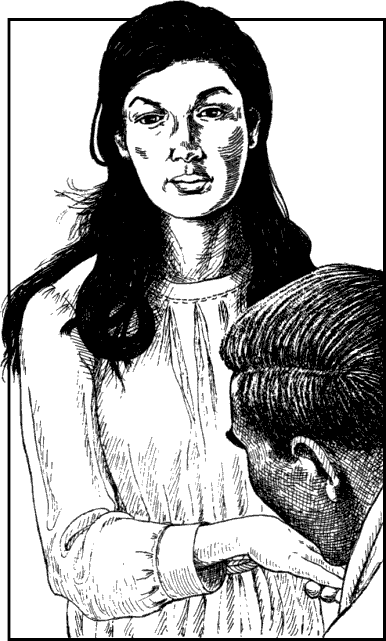

150
Fernant’s servant returns to the room with a beautiful young woman by his side. She is dressed in the simple brown robes of a peasant girl, yet her long black tresses and smooth olive complexion indicate that she is of high-born ancestry. For a moment she holds you with her deep brown eyes and you sense at once that she is as intelligent as she is beautiful.
‘This is Oriah,’ says Fernant, rising from his seat. ‘Welcome, my dear. You are among friends here.’ The young woman offers him her elegant hand and he kisses it lightly before turning to face you. ‘I have promised her safe passage to Bisutan aboard The Pride of Sommerlund. I trust you do not object?’ he says.

At first you are wary of permitting a stranger to join the ship. She is a very attractive young woman, and her company would certainly be appreciated during the long voyage south, but the agents of Naar have been known to adopt many guises to further their evil aims. Fernant, sensing your reticence, attempts to persuade you by explaining the predicament in which Oriah has been placed through no fault of her own.
You learn that Oriah is the daughter of Khazullo—the Funtal of Fio Fadali—a rich, powerful, and very ruthless man. He has pledged his daughter’s hand in marriage to Sesketera, the ruler of the city-state of Ghol-Tabras in northern Shadaki. Sesketera is a cruel and brutal suitor, and Oriah will be sure to spend the rest of her life as little more than his slave if the marriage takes place as her father has planned. Her father is deaf to her wishes; his only concern is for the political union of the two cities. His daughter’s happiness means nothing to him when compared to the riches and power he will gain from a marriage to the House of Sesketera.
Oriah has run away from her father’s palace in Fio Fadali and she has sought refuge in Barrakeesh. But agents in the employ of her father and Sesketera have traced her to the capital and now she must flee once more. Fernant, moved by the plight of this brave young woman, has pledged to help her reach Bisutan where trusted friends will smuggle her to safety in neighbouring Kakush.
Having heard her story and satisfied yourself that she poses no threat to your mission, you agree to allow her to travel with you to Bisutan aboard The Pride of Sommerlund. Oriah and Fernant thank you for your compassion, and the Lord-lieutenant suggests that perhaps it is time to retire for the night. He has his servant take Oriah to an adjoining chamber, and he offers you the use of a room upstairs. It is a very warm and humid night and you decide that perhaps it would be more comfortable if you were to sleep outside on the roof. Fernant has his servant bring you a mattress upon which you settle down to sleep under the desert stars.
If you possess the Discipline of Astrology, turn to 133.
If you do not possess this skill, turn to 327.